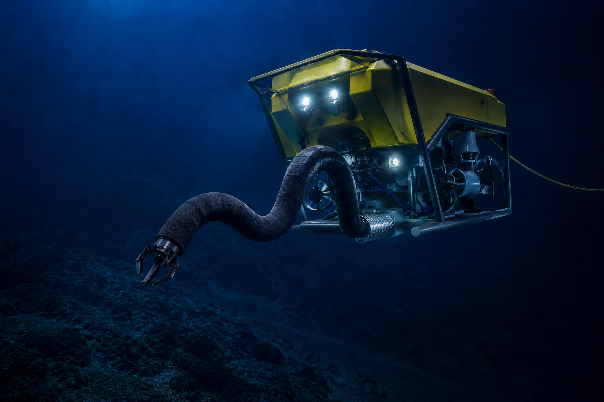
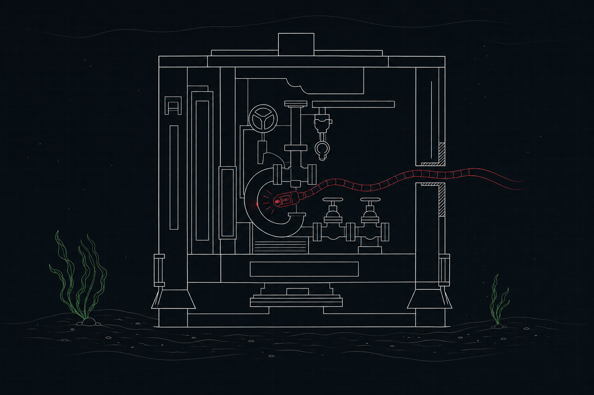
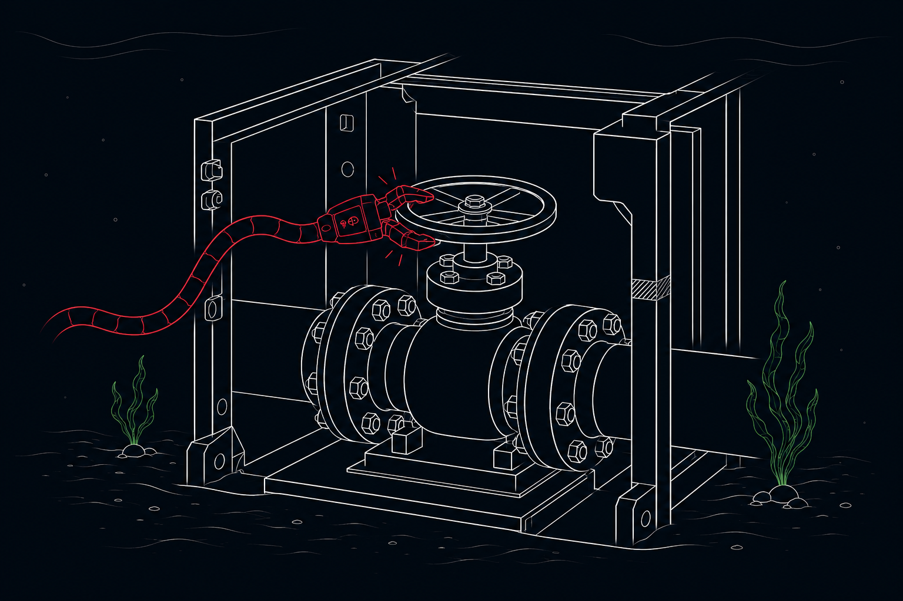
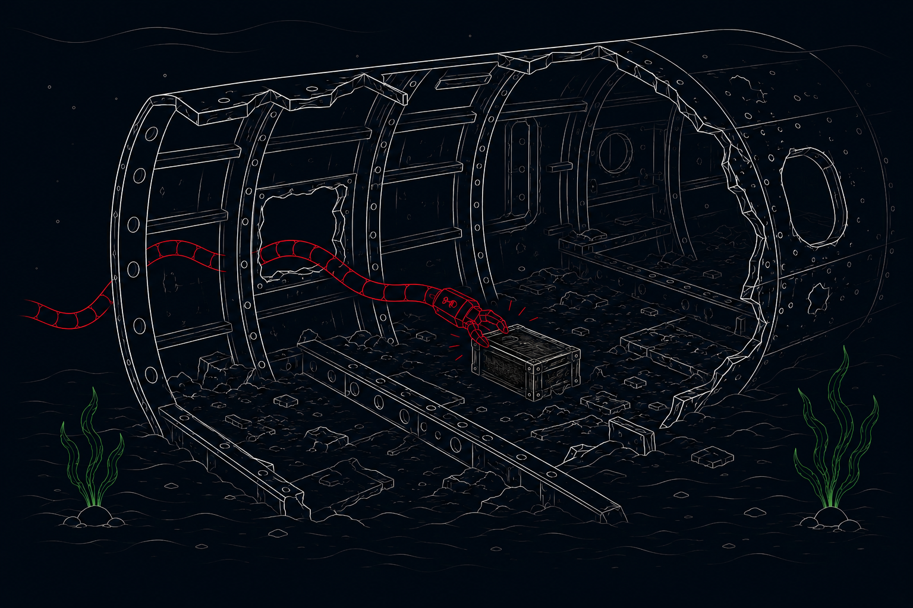

Applications
The Tentacle-Arm is a single hyper-dexterous access platform — deployed today in subsea, engineered to extend wherever confined geometry and physical risk define the problem.
Applications
One architecture — hyper-redundant, conforming, portable — deployed wherever access is defined by confined geometry. Select an environment.
Current Deployment Frontier
Offshore infrastructure — pipelines, risers, manifolds, hull structures, subsea valves — demands inspection and intervention in geometry that is dark, pressurised, and hazardous. Conventional ROVs lack the dexterity to operate inside it. Divers carry unacceptable risk.
The platform's base architecture and current deployment environment — the most demanding access problem we solve. Every other environment is a variant of this.
Architecturally Reachable
Confined inspection inside plant, pressure vessels, and machinery — heat exchangers, pipe runs, and valve assemblies where human access carries high risk and downtime cost. The access problem is structurally identical to subsea, without the water.
The subsea platform, lightened. Subsea − weight = industrial — the same conforming architecture, freed of depth-rating mass.
Architecturally Reachable
Remote handling of heavy or hazardous objects in unstructured field environments, where a conforming arm reaches what rigid manipulators cannot — mounted on ground platforms for standoff operation.
Planned development stage. Industrial + significant payload = defense — scaling actuation and load capacity on the proven platform.
Horizon
One of robotics' classic hyper-redundant-arm markets: in-containment inspection and decommissioning where human exposure is unacceptable and access geometry is punishing.
Planned development stage. Builds on the defense-stage platform with radiation-hardened electronics and materials.
Horizon
In-orbit servicing and structure assembly — satellite maintenance where a slender, dexterous manipulator solves access constraints identical to those on Earth, in vacuum and thermal extremes.
Long-horizon development stage. Adapts the qualified platform for orbital-environment compatibility.
Horizon
Threading inside aero-engines, wing structures, and fuel systems for in-situ inspection without teardown — the smallest, most intricate confined geometries the architecture will reach.
Long-horizon development stage. The platform's extreme-miniaturization endpoint.
Application in Focus

The Tentacle-Arm — integrated on an observation-class ROV, operating at depth.
Subsea is one of robotics' hardest, most pressing access problems. Offshore assets are ageing, inspection and intervention demand is climbing, and the confined geometry where failures begin is exactly where conventional systems cannot operate. This is where the Tentacle-Arm's portability becomes decisive — a deployable, conforming arm that reaches inside structures without a vessel-scale intervention spread or diver risk.
Backed for Subsea
Xtent is backed by Cochin Shipyard Ltd (CSL), India to develop solutions using the Tentacle-Arm for maintenance of inaccessible areas in ships — a direct mandate from one of the country's largest shipbuilders to solve the confined-access problem in the field.

Pipelines, risers, and structures need regular inspection to catch corrosion and fatigue before failure. Confined sections are today skipped or inspected at high diver risk and cost.

Much of subsea operational cost is physical intervention — valve actuation, connector engagement, light maintenance inside confined structures conventional ROVs cannot reach.

Retrieval in confined or obstructed environments is among the sector's hardest tasks. Lost tooling and debris within infrastructure create scenarios neither ROVs nor divers handle reliably.
Whether you build ROVs, operate offshore assets, or invest in frontier robotics — if your work touches a confined-environment access problem, we want to hear from you.